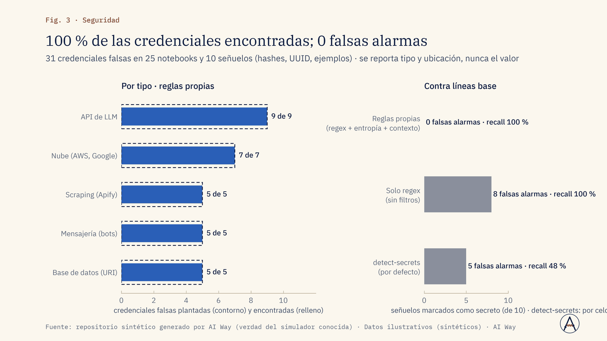
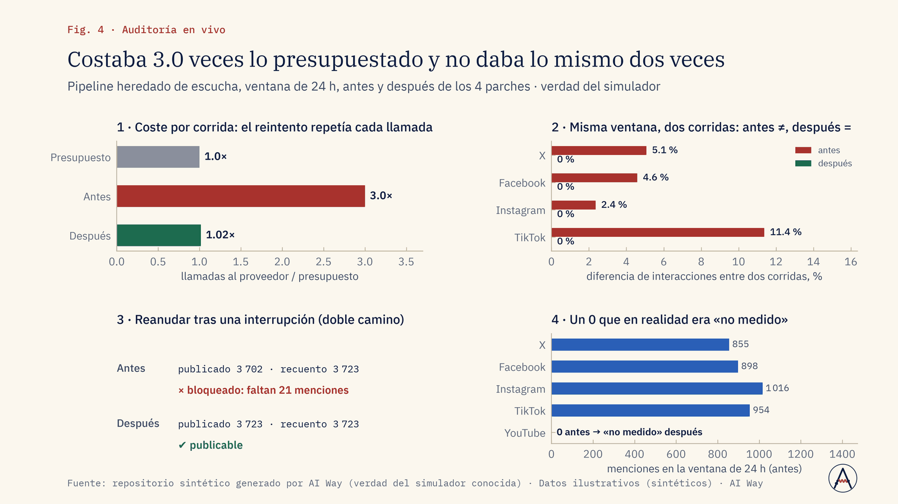
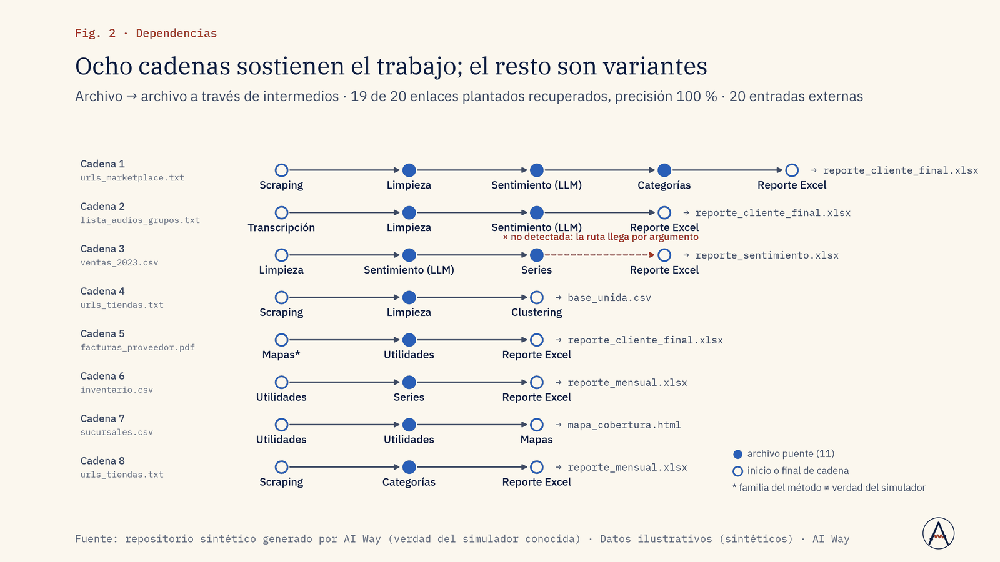

Operación y costos
¿Por qué el pipeline cuesta más de lo presupuestado?
Auditamos en solo lectura el coste real por corrida y lo comparamos con el presupuesto, fuente por fuente.
Corregir el paso que dispara el coste o ajustar el presupuesto.
Servicio · Nº 09
Tus notebooks, pipelines y tableros heredados, inventariados, medidos y convertidos en algo que se puede operar, sin reescribir lo que sí funciona.
01 · El problema
Después de años de proyectos, el conocimiento del equipo de datos vive en cientos de notebooks llamados test, final_v2 y Untitled, con claves de API en el código y pipelines que solo entiende quien los escribió (que quizá ya se fue).
Nadie sabe cuánto cuesta realmente correrlos, si dos corridas dan lo mismo ni si las fórmulas del tablero son correctas. Hace falta un diagnóstico medido y un plan de rescate: qué consolidar, qué archivar, qué corregir y qué riesgos de seguridad hay, con cambios pequeños y auditables.
02 · Enfoque
03 · Resultados de la demo
Un repositorio sintético de 270 archivos (240 notebooks y 30 scripts) con problemas plantados. El método lo inventaría sin LLM, recupera familias y cadenas de dependencia, encuentra las credenciales sin falsas alarmas, consolida sin borrar nada y audita en vivo el pipeline; cada corrección es un commit con su prueba.
270 archivos, 12 familias reales
Fuente: repositorio sintético generado por AI Way (verdad del simulador conocida) · Datos ilustrativos (sintéticos) · AI Way
132 archivos sustituidos por 11 masters, nada borrado
Fuente: repositorio sintético generado por AI Way (verdad del simulador conocida) · Datos ilustrativos (sintéticos) · AI Way



04 · Límites declarados
05 · Aplicaciones de negocio
Ejemplos de decisiones que este servicio ayuda a tomar; el alcance se define en el diagnóstico.
Operación y costos
Auditamos en solo lectura el coste real por corrida y lo comparamos con el presupuesto, fuente por fuente.
Corregir el paso que dispara el coste o ajustar el presupuesto.
Riesgo y seguridad
Escaneamos notebooks y scripts con reglas y contexto; reportamos tipo y ubicación, nunca el valor.
Rotar credenciales por orden de riesgo y sacarlas del código.
Ventas e ingresos
Verificamos fórmulas y KPIs contra la definición del negocio y probamos cada corrección.
Volver a confiar en el tablero o corregirlo antes del cierre.
Marketing
Corremos el pipeline dos veces con la misma ventana y medimos la diferencia y la cobertura por fuente.
Publicar resultados reproducibles o frenar el reporte hasta corregir.
Dirección y estrategia
Inventario sin LLM, familias por similitud y grafo de dependencias muestran qué funciona y qué no.
Elegir entre fortalecer o reescribir con evidencia.
Talento y continuidad
Generamos fichas, masters parametrizados y una vault de conocimiento con pasos, trampas y deuda.
Incorporar a una persona nueva sin depender de quien se fue.
06 · Paquetes
Diagnóstico: inventario automático, familias, grafo, reporte de secretos y recomendaciones priorizadas (hasta 500 archivos).
Duración típica: 1 a 2 semanas
Diagnóstico + auditoría en vivo de un pipeline crítico (coste, reproducibilidad, cobertura, fórmulas) + parches quirúrgicos y masters de las 5 familias principales.
Duración típica: 4 a 6 semanas
Rescate completo: consolidación en masters, archivado reversible, refactor a pipeline reanudable con QA, vault de conocimiento y acompañamiento del equipo.
Duración típica: 8 a 12 semanas
Sin precios publicados: cada propuesta se cotiza tras un diagnóstico de alcance.
07 · Preguntas frecuentes
Solo si la evidencia lo justifica; la regla por defecto es fortalecer.
El escaneo reporta tipo y ubicación; los valores no se copian ni se guardan.
Sí; se entregan hallazgos y parches para que el dueño los aplique.
El inventario automático corre en horas; el reporte, en días.
08 · Descarga
Presentación de la demo (PDF, 1.6 MB). El caso completo: problema, método, resultados contra criterio y límites declarados.
Descargar PDFSiguiente paso
En una llamada de 30 minutos revisamos si se puede, cómo lo mediríamos y qué no te podemos prometer.
Otros servicios